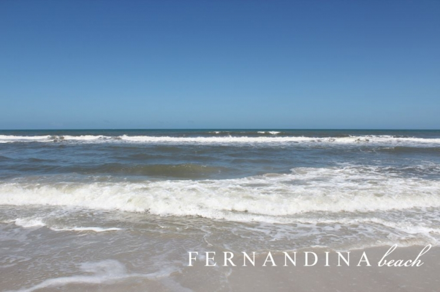

.png)
.PNG)
.PNG)
.PNG)
.PNG)
.PNG)
.JPG)
.JPG)
.PNG)
.PNG)



Yes, I have been missing from the blog scene for a few days. Â We finally managed to squeeze a vacation in between wisdom teeth extraction, a mission trip, a conference, band camp, and other things that go on the calendar in June and July (and school starts back here at the end of July.) It was a beach vacation to one of my favorite places….

Fernandina Beach, Florida on Amelia Island – a town steeped in pirate adventures.
Upon arriving in town our first stop was for lunch at Brett’s, and the restaurant sits right there at the water.
We were lucky enough to get a table out on the porch with this view.

Here are a couple of the meals we enjoyed… my chicken salad plate and my husband’s fried shrimp dinner (an allergy to shellfish is NO fun for me when you are at the beach.) Â Our son had already devoured a good bit of his fish tacos before I remembered to take a photo, and our daughter had boiled shrimp.

It was a little early to check into our inn so we did some shopping here…

These are the shops at Palmetto Walk. Â My favorite is the Plantation Shop…I should say shops, since they now have 3 wonderful buildings…

filled with great pieces of furniture, accessories, and gifts.


This next piece of furniture was gorgeous, and I had to laugh when I saw that it had a large number of James Farmer books inside.

There is also a restaurant in this set of shops, but of course, we had just finished lunch and did not need to eat again.

Even if these weren’t shops, I would still love them just for their beautiful buildings. Â Aren’t they great?! Â After shopping, we decided to check at the inn to see if our rooms were ready.
Pulling into Elizabeth Pointe Lodge gives me such a feeling of “going home” for some reason. Â When my father called the night before we left, he asked, “Where will you be staying?” Â I told him ELP, and he said, “Again? Â The same old place?” Â And yes, the same old place. Â When you find something so wonderful, why should you go anywhere else?

You walk inside, see all the old nautical decorations, view the ocean outside the big windows, and you are instantly relaxed.

Would you like a sip of their afternoon lemonade?

Here is a better view of the entire room. ( I haven’t figured out how to take a photo of a room looking out a window, without washing out the entire room.)
We were lucky, and both our rooms were ready early! Â So it was down this hallway… (Sorry for the fuzzy picture. Â I forgot my tripod of all things! And they keep those hallway lights dim.)

and then into the kids’ room that was large enough for a sitting area, a king size bed, and room for an air mattress for our daughter.


And then our room was right next door through the connecting hallway.


This was the view from our window. Â (This is obviously taken through the screen.)

After all the rain in Georgia for the last 2 weeks, that dose of sunshine was much appreciated!  We put on sunscreen, grabbed beach towels at the front desk, and spent the rest of the afternoon here. 🙂

That evening we drove back into town for dinner and enjoyed walking around the shops afterwards…lots of neat old buildings and lights on the trees. Â They don’t close until 9:00, so it is still lively late in the evening.

Twisted Sisters is a big fun shop. Â My daughter and I could spend a good bit of time (and money!) in there.


I will stop here for today.  Twenty-five or so fuzzy photos is long enough for one post, and there will be more for you to see next time. 🙂
Hope you are on vacation someplace good!


.PNG)
My family also vacationed in Fernandina in the 50’s, 60’s and 70’s and had many a great meal at the Sandbar Restaurant. I have searched the web many times looking for an old photo of the place but so far have come up empty handed. My mother turns 80 this year and I would love to find one as a gift. Please let me know if any turn up. (P.S. did follow the old street to the inland waterway where it was located- a new mega mansion now sits in the spot.)
———————————————————————
Hi Jane,
I too have looked to see what I could find. At one point there had been a vintage menu on Ebay from the restaurant, but unfortunately I missed the bidding. (Would have loved to have purchased it for my father in law.) I know that author Marsha Dean Phelts has published several books on the American Beach area history of the island. It is possible that she might have included a photo in one of her books, but I do not own any of them to know for sure. If you could find a way to contact her, perhaps she would be more successful in the search than you or I have been.
Best of luck in your search!
Kelly
Kelly..
I stumbled across your blog when searching for The Sandbar restaurant in Fernandina.My family had a beach front cottage on S Fletcher.We vacationed there 40s,50s,60s.Fernandina was a small fishing village and it was all very exotic then.The Sandbar restaurant was somewhere on a slough. There would be small boats tied to the dock. The seafood was absolutely the best. I realize it is gone . I would like to fine some photos and also where it was located if possible.
Thank you for a wonderful trip down memory lane. I actually won a small writing contest with my description of Fernandina. I am thrilled with your blog.
Many Blessings….Judy
Kelly,
Just found your blog and I love, love, love it!!! I loved reading about your trip to Amelia Island. We have gone several years and stayed at the Addison House. If you ever get a chance or decide to make a change it is a wonderful place to stay. The owners are wonderful folks and make you feel like you are family. My son lives in Jacksonville so we try to visit at least twice a year if not more and we will make it a point to stay on Amelia Island just as a get away for ourselves for a night or two while visiting him. It is our special treat to ourself. I would love to retire there one day. I too love the twisted sister and think I could go for broke in there if my husband would allow it. LOL. Plan to visit your site more frequently. Thanks for the evening of wonderful pleasure.
————————————————————
Welcome, Cindy! I am so glad you found the blog. 🙂 With the rainy day we had here today, I would have loved to have been on Amelia Island today. You will have a hard time pulling me away from Elizabeth Pointe Lodge, but if we ever get a chance to go and there is not a vacancy I will certainly remember Addison House. Thank you for the recommendation! Please visit the blog again, and thank you for leaving your comment here tonight.
Happy New Year!
Kelly
Great post. I spent my first wedding anniversary at EPL and cannot wait to return. Heaven with a porch, most definitely.
I will use this as a helpful shopping guide for when I go back with some girlfriends and leave the husband at home this time. 🙂
——————————————————————————-
Marilyn, “Heaven with a porch” is a great way to describe Elizabeth Pointe Lodge. And what a great place to go for your first wedding anniversary! (and any other for that matter.) So glad you found the post helpful. I agree that going with girlfriends would be fun for the shopping trip.
Kelly
We are driving to EPL and I ran across your blog. This will be our first time to visit and I’m even more excited about our week there after reading your blog! Thanks for sharing!
——————————————————————————
Have a great time there, Julie! I am jealous I can’t be on my way there, too. Thank you for reading and taking the time to leave your comment. Find a shark’s tooth for me on the beach. 🙂
Kelly
What a great getaway, sounds like just the ticket after all the poor weather you’ve been having. I fell in love with Amelia several years ago when we visited on a day trip from Ponte Vedra (golfing). Went to some of the shops you photographed, lovely places. Hope everyone had a great time. And, sorry to hear that it’s almost bts time, getting out so late we only have two weeks under our belt as of today.
——————————————————————————
It was definitely just the ticket after all this rain! Can’t believe you are only two weeks into your summer. Man! I feel like that is all I have since I continued to work setting up my new room for several weeks after we got out for the summer. We start back next week. Boo hoo. I think all the rain here has made us feel like we have missed summer too. Not good. I hope to just stay in a “summer state of mind” even though we will be back at work. That is my goal for the new school year. 🙂
Kelly
Hi Kelly. Don’t you just love Amelia Island. I live in Jacksonville about 45 mins from there but growing up will lived even closer. Of course we spent all our summer weekends there but we also rented a cottage for 1-2 weeks every summer. As a matter of fact or cottage was only a couple of doors down from Elizabeth Pointe Lodge. I have absolutely the best childhood memories there. We still get out there every now and then. I’m so glad you can appreciate the home town feel of wonderful Fernandina Beach.
I love your blog and am so glad that I’ve found it.
Hugs… Tracy@CottonPickinCute
P.S. Next week I’m having a Celebrate Summer giveaway, with a different giveaway starting every day for 5 days. Stop by and check it out. There are some great prizes!!!
——————————————————————————
You are so lucky to be so very close to Amelia Island,Tracy. And then there is that great St.John’s Town Center you have there in Jacksonville,too. The best of both worlds! Man I wish I had hopped over to your posts before your Olay giveaway was gone. You have some nice things in your giveaways this week. (But I need some Olay magic to take years off my face!LOL)
Kelly
I’m sooo jealous right now! Ferny is my hometown!!!! As soon as I saw the title, I immediately scrolled down to the comments to tell you that. lol As I passed all the pictures, I knew every place. Where y’all ate is is where all the shrimp boats used to dock. My mother would take us down there whenever she wanted shrimp for dinner, which was quite often. lol Those docks used to scare me to death. I hated looking down through the cracks and seeing the water and the waves underneath. Especially at low tide. It was a long way down there! I haven’t been in years and am dying to get back. All my cousins are down there right now!
If you have never done the candlelight tour of Fort Clinch, I highly recommend it!
We love going there because you can look either way down the beach and not see 100 people. There are wonderful shops and restaurants, and tons to do! Have fun and please splash in the waves for me!
—————————————————————————–
Jayne, I would be so homesick if I had a beach town for my hometown. Girl you need to go back for a looong visit! I can certainly see how the dock would scare you as a child. It has to be a long way down to handle all the ships that come in and out of there. We have not done the candlelight tour of the fort, but will put it on the agenda for next time we visit. Thanks for the recommendation!
Kelly
Wow! That inn is just beautiful! I wanted to tell you we went to the Mast Farm Inn for our 25th anniversary this past May. It was wonderful! I read your post (about Valle Cruis and The Mast Farm Inn)and that had a big influence on us going there! So Now, we will have to go to Elizabeth Pointe Lodge! Enjoy your vacation!
——————————————————————————
Sharon, I am jealous! We definitely need to plan a trip there-maybe for our upcoming anniversary…hmmm. I am so glad you enjoyed it! You will love EPL, too. Definitely give it a try. It is a beautiful place and sooo relaxing.
Kelly
I’m going to store this idea away for next year’s Spring Break. It’s beautiful! I can see why you used the Inn as a model for your own home. In Chicago, we had heavy rains in a short amount of time. Our family room flooded and we now have to take it down to the studs and rebuild. The good news is, thanks to your blog, I have all sorts of new ideas!! The wood floors with the area rugs are wonderful. Thanks for another great post!
——————————————————————————
Oh my goodness how awful, Barb! The rain this year has been just too much, but thank goodness we have not had to deal with our home flooding. How scary for you! Good luck with your rebuilding. And I hope you do get to go to Elizabeth Pointe Lodge next year for your spring break.
Kelly
Oh what a lovely place. Sounds like such a great vacation. Beautiful beaches and great shops, can’t beat that. Hugs, marty
—————————————————————————–
You are so right! Add in the great restaurants, and who could ask for more?
Kelly
Looks like it was a lovely vacation. My husband and I stayed at Elizabeth Pointe Lodge for our anniversary one year. I don’t blame you for going back, it’s a beautiful place.
——————————————————————————
It is a wonderful place to celebrate an anniversary, isn’t it Kristi? We celebrated our tenth anniversary and our 25th one there, too.(I wish we could go there EVERY year for it – especially since it is also my birthday on that day!)
Kelly
Heaven! Would love to hear the waves and feel the sand in my toes. Thanks for sharing. I know how you feel about your allergy, I developed an allergy to eggs when I was about 10 years old. Guess what my fave foods are- deviled eggs and lemon meringue pie! 🙁
——————————————————————————
Isn’t that the way it always is?! Why couldn’t I have an allergy to carrots or some other food I don’t like? Eggs must be a very hard thing to be allergic to…so many foods have them in them!
Kelly
EPL is definitely on our must stay list!…Looks wonderful and I did not realize that my sister loves to stay there….When we lived in Florida, we were not that far from Fernandina Beach….it looks wonderful…Have fun!!!
——————————————————————————
I hope you do get to stay there soon Shirley. What a small world that your sister stays there, too!
Kelly
Kelly,
It looks like you had a relaxing get away! We did also in St. Augustine beach last week. We really enjoyed walking around and trying out local restaurants like my new favorite,Saltwater Cowboys. The clam chowder was perfect! Have a great rest of the summer while it lasts!
——————————————————————————
Yay! I am so glad you got to go to Saltwater Cowboys! Thanks for eating some clam chowder for me. If I remember correctly, they have a good salad too with a fruity dressing.(I know that is not what people crave when they are at the beach, but I liked it.) Vacations just go by too fast!
Kelly
I’m Amy O’Quinn’s mother, Betty…Amy described our week so I won’t go into that…My husband and I honeymooned on Amelia Island 53 years ago June 19th…we continued to go there through the years with our girls, Melinda and Amy…now our family has grown to 14. We’ve stayed up and down the island…for many years at Fernandina Cay just north on the corner from Elizabeth Pointe. Now at a beach house which accommodates our growing family…
I’ve often wondered in a restaurant, shoppes, etc., how many bloggers might be present….
We’ve eaten in many restaurants through the years but one of our favorites closed a few years back…Down Under. We usually saw Senator Saxby Chambliss there on July 4th.
Blessings,
Betty
——————————————————————————
Welcome Betty! So glad you came by to visit the blog. Oh what a treat to have honeymooned on Amelia Island, and congratulations on a 53 year wedding anniversary! That is something to be proud of. I saw Fernandina Cay just yesterday. That section of the beach has really grown to me. You mentioned Down Under…boy I loved that place! It was always among our favorites. Do you remember the Sandbar restaurant…on the intercoastal waterway…large log cabin with killer cheese spread they served you before your meal (and great cole slaw)? The Sandbar was our number 1 spot until they closed (and the place was bulldozed). Then Down Under moved into that number 1 ranking for us. Nothing compares to either one of those to me. Nobody makes fried shrimp like the Sandbar.
How funny that you would see Senator Chambliss on the island each year! Thank you again for stopping by the blog and leaving your thoughtful comments.
Kelly
How absolutely refreshing!! All these great pix are making me anxious for our family beach trip coming up later this summer. LOVE the EPL – so charming! What a neat place to stay! Like you, we stay in the “same old place” during our beach vacations down on South Padre Island (if it ain’t broke, right?!). Glad you’re enjoying some family fun time and SUN time. I know those rainy Georgia days were givin’ you the blues! PS: I’m taking a moment of silence in honor of your dreaded shellfish allergy ………………..amen.
——————————————————————————
There is something to finding “your place” and sticking with it, isn’t it Suzy? Would you believe it rained on us as soon as we got all the luggage back in the house at home??!! Thank you for the hilarious moment of silence. It wouldn’t be so bad if I had been born with this allergy and never knew the glorious flavor of shrimp and lobster, but since I developed it after I turned 50, I KNOW what I am missing. I know you will enjoy your vacation on South Padre Island. Eat some shrimp for me!
Kelly
awwww… You were in MY neck of the woods….I’m in jacksonville on the northside.. so about 40 minutes to Elizabeth Pointe Lodge!!! LOVE … LOVE … Fernandina Beach / Amelia Island!! We run up that way quite often just to browse and also to enjoy the gorgeous beach of course !!!! I had to laugh when I saw the picture of Brett’s …. YUUUUUUUMMMMMMMMMMMMMM.. Delicious food and beautiful views!!! You captured it all in your pics!!!!! ( Fish Tacos are tooo good!!!! Thank you so much for posting!!! Makes me want to hop in the car and head that way right now!!!!! LOLOLOL.. Terri
—————————————————————————–
Terri, if you are on the north side of Jacksonville, yes you are close!! I normally get the fish tacos, but we try to have everyone get something different from one another when we go so that we can all try each other’s foods…sort of like an entrée sampler. 🙂 You should hop in the car and drive right on up there. Eat a slice of key lime pie for me at Brett’s please.
Kelly
Oh, I am so longing for EPL! It’s only been a year since we were there–but seems like much longer! Sooo happy you found time to get away to this magical, soul-lifting B&B. I just felt like you were “off to some place”! With all that rainy, flooding type weather that was going on and on at your place it was a perfect time to just get away and with the starting of school looming on the horizon it was imperative for you and your family! Can’t wait for the second installment of your time on Amelia Island! Hope the waves and sea air linger on you and in your thoughts for a good long while!
——————————————————————————
From everyone’s comments, we just need to plan us a wonderful girls’ weekend there! You are so right, Louvina about it being the perfect time to get away. Unfortunately it made my husband miss his class reunion. But there was absolutely no other time in the schedule to fit something in. Desperate times! I hope you get to make a return visit to EPL in the near future. Love it there! (Can you tell?!)
Kelly
If you were there anytime from June 30th-July 6th, we were there at the same time! We enjoyed our annual week beach trip with my parents and sister’s family. We were downtown at the marina for fireworks on Thursday night after eating at the Crab Trap, and we were back there on Saturday for a little shopping before heading home. I made our yearly pics with the pirate and under the hanging shark! How neat that we might’ve crossed paths without realizing! Of course, if I had seen or recognized you, I would’ve introduced myself! 🙂
Amelia Island/Fernandina is one of my favorite places! BTW, the house we stay in is just down from Elizabeth Pointe…not far from where the old water slide used to be. We walked by Elizabeth Pointe several times as we were looking for shells. Who knows?!
Great post!
Blessings,
Amy
——————————————————————————
We came in right after you Amy. You were there at a great time! We ate at the Crab Trap Saturday night. Making a picture under the pirate is a super idea! Love it. I know the area where you rented a home. That area has really changed from the light down to your direction. Had you stayed a couple of days later or had we arrived earlier, I know our paths on the beach would have crossed since that is where we mostly stayed. Maybe next year! 🙂
Kelly
The rooms were so neat!
——————————————————————————
Sammy, I could wander for days following the cleaning lady to just look at all the beautiful rooms! 🙂
Kelly
It looks like a wonderful place Kelly! You are a magnet for beautiful scenery! I am amazed, as always, by how quaint and beautiful these places are that you find.
——————————————————————————
Sarah – “A magnet for beautiful scenery”…I love that!! Elizabeth Pointe Lodge IS so quaint and beautiful, and I really think you would adore the old downtown. There is so much history there. Just hop on a flight, and fly on down to Florida!
Kelly
I love Amelia Island – I haven’t visited the Elizabeth Pointe Lodge but have heard wonderful things. Thanks for sharing your latest visit. My mom and sister both live in Jacksonville so somehow I never end up making the short trip north any more when I go down there….your post is a reminder that I need to tack on a few days at Amelia Island next time I visit.
Enjoy your day! xoxo
——————————————————————————
Sandy you are just a very short drive from there when you are in Jacksonville! If you don’t stay at Elizabeth Pointe Lodge, at least stop in and have a dessert in their oceanfront dining room. It has such a beautiful view. We skipped our trip to St. John’s shopping center in Jacksonville this time but hope to make it back there on our next trip. It is a fantastic place to shop there.
Kelly
Oh, Kelly, lucky you. We have not been in years and use to go yearly for a business conference and stayed at the Ritz. Oh, I miss those trips that were cancelled when the economy took that nose dive. Hopefully they may start up again since things are coming back. I love the Plantation shop and went every year. Also ate at Brett’s each time. Such great memories you have brought back. I love the place you stayed. Looks perfect.
——————————————————————————-
Kim, I hope you get to go back soon. The area has really built up in the last few years, and the downtown area was very busy! I am glad I could bring back good memories for you. Brett’s is always so enjoyable to eat at. You would LOVE Elizabeth Pointe Lodge.
Kelly
What a beautiful place! That’s just my kind of get away, salt air and familiar surroundings, I’m so glad you were able to fit it in to your busy schedule!
Just a tip on taking pictures without washing them out by windows. Use you backlight feature on your camera if you have one. I just found mine after taking tons of washed out pictures!! LOL!
Hugs!
—————————————————————————–
I will look for that Pat. Thanks for the tip!
Kelly